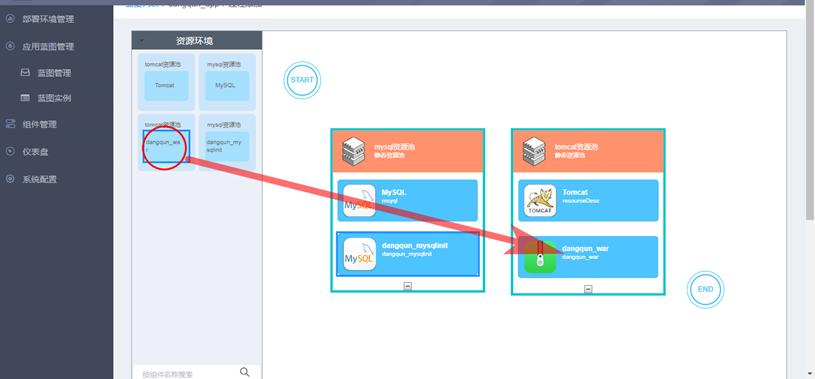

下面以一个Web应用的典型场景为例来说明蓝图过程设计器的操作过程。该web应用共需要Tomcat，dangqun应用，Mysql及dangqun应用初始化数据库脚本4个组件，其中应用和数据库分别部署在两个资源池中。
1. 从左侧工具栏拖动两个资源池到蓝图画板中，再拖入开始和结束节点：
2. 从左侧工具栏资源环境中，点击深色的组件部分，拖动组件到对应资源池中。注意：组件只能拖动到自己所在的资源池中，而不能拖动到其它资源池中。例如示例中的dangqun_war组件属于tomcat资源池，因此只能拖动到tomcat资源池中，而不能拖动到mysql资源池中。如图所示：

3. 绘制连接线，方式与绘制组件过程相同：
4. 双击每个组件，选择需要执行的组件过程：
5. 双击资源环境选择执行方式，并发或者轮循，默认为并发：
6. 过程绘制完成后，点击“添加过程”，输入过程名称并保存，蓝图过程即绘制成功：
蓝图过程绘制说明：
|
1、鼠标左键单击资源池拖拽，可以拖拽出资源池及资源池中的组件； 2、鼠标左键单击资源池中深色的部分（组件名称标识的部分）进行拖拽，只是拖拽出了组件，不包含资源池； 3、鼠标左键双击编辑资源池可以选择“轮循”或者“并发”模式； 4、鼠标左键双击组件，可以选择组件的某个类型的某个过程； 5、鼠标置于节点上，当光标变为手形时，左键点击拖拽可绘制出过程连接线； 6、鼠标左键单击选中资源池、组件或连接线后，按Delete键可删除该资源池、组件或连接线； 7、过程必须以开始节点开始，以结束节点结束； 8、过程中所有节点必须是相连的，不允许有孤立节点存在，且不能出现环形结构； 9、不同资源池的组件不允许放在同一个资源池内； 10、一个环境中的并发数最多不要超过1000个； |